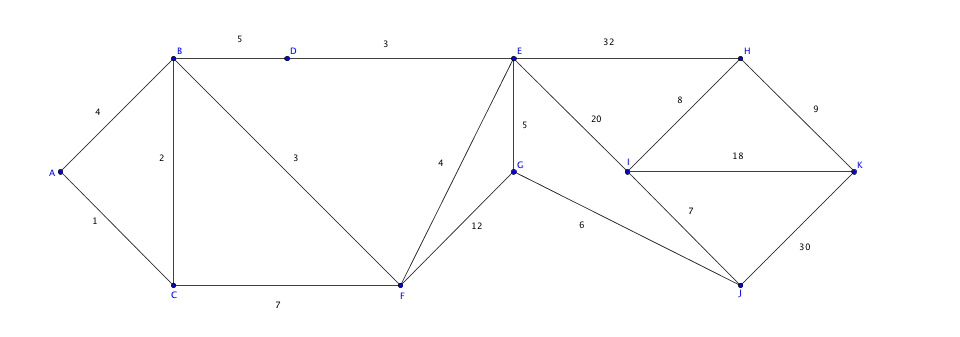

Exercices corrigés - Théorie des graphes - exercices pratiques
Enoncé 
Dire parmi les dessins suivants lesquels représentent le même graphe :


Enoncé
On considère le dessin suivant :
 Est-il possible de le dessiner sans lever le crayon et en passant une, et une seule fois, par chaque trait?
Est-il possible de le dessiner sans lever le crayon et en passant une, et une seule fois, par chaque trait?
Enoncé
A un examen, les candidats peuvent choisir 2 ou 3 options parmi les 6 options proposées : graphes,
vélo, langue régionale, guitare, latin et natation. Certains élèves ont choisi les options graphes, langue régionale,
guitare. D'autres vélo et latin; D'autres enfin langue régionale et natation. Les élèves passent au plus une épreuve chaque jour.
A l'aide de la théorie des graphes, répondez aux questions suivantes :
- Combien peut-on programmer d'épreuves d'option au maximum dans une journée?
- Quelle est la durée minimum de l'ensemble des épreuves optionnelles?

Enoncé
Une société doit transporter par camions six produits chimiques, notés P1,...,P6, depuis
l'usine de production jusqu'à l'entreprise utilisatrice. Pour des raisons de sécurité, certains produits
ne peuvent pas être transportés ensemble : P1 et P2, P1 et P4, P2 et P3,
P2 et P5, P3 et P4, P5 et P6. Déterminer le nombre minimum de camions nécessaires.
Enoncé
Huit jeunes hommes veulent travailler dans un supermarché
dans lequel trois postes sont disponibles. Le responsable, soucieux d'éviter les problèmes,
veut tenir compte des inimitiés entre ces jeunes hommes :
- Adrien ne peut supporter Damien;
- Benjamin ne parle plus à Adrien;
- Cyril refuse de travailler avec Benjamin;
- Damien ne supporte pas Greg;
- Eric ne veut cotoyer ni Benjamin, ni Frank, ni Hector;
- Frank n'apprécie pas Greg et Hector;
- Greg ne s'entend pas avec Adrien;
- Hector refuse de travailler avec Frank ou Cyril.
- Construire un graphe non-orienté traduisant cette situation d'incompatibilité d'humeur.
- Eric a le meilleur CV. Qui peut-on embaucher avec lui?
- Donner une autre combinaison possible de trois jeunes, autres qu'Eric, que l'on peut embaucher.
Enoncé
Cherchez le plus court chemin de $A$ à $K$ dans le graphe suivant. On détaillera les calculs.

Enoncé
Un homme, sa femme jalouse et sa maîtresse souhaitent traverser une rivière. Mais la barque du passeur est trop petite, et il ne peut transporter que deux personnes à la fois. Comment faire, sachant que la femme jalouse ne veut pas que son mari et la maîtresse soient seuls sur une rive, et que l'homme ne veut pas que sa femme et se maitresse soient seules sur une rive?